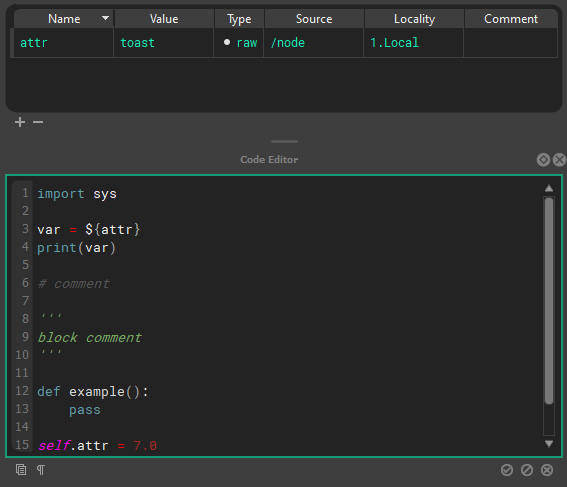
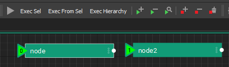
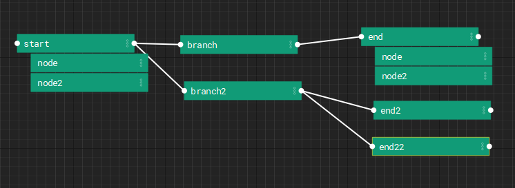
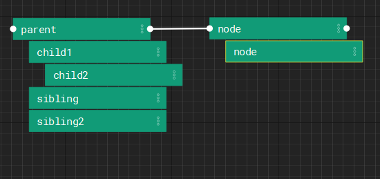

Graphs and Nodes
A graph is a stage of nodes. Each node holds attributes and a block of code, and the graph runs the nodes in order. This page covers those parts and how they fit together. How a graph is built from layers, and how nodes inherit from their parents and instances, is on Layers and References.
Stage
The stage is a collection of graphs, trees, and layers of nxt nodes that set the composition structure and execution order for an nxt file.
Every node has access to the STAGE object. When working with Python classes (besides the builtins) it is best to store those objects on the STAGE.
An example of how you would do that in a node's code is as follows:
my_object = ComplexData()
STAGE.complex_data = my_object
Another node later in the execution can access that object as follows:
STAGE.complex_data.a_method()
Stage attributes and composition
Note that each layer is also a node, and those nodes get composited to the STAGE object. Each node is parented to that object and inherit the attributes of it. This can be useful for defining "global" variables, or a state that needs to propagate into the entire graph.
Node
A node is a container for code (or compute) and a collection of attributes. Every node contains a single code block that is executed when a node is run. Execution order is defined both by hierarchy and connections to execution plugs on the nodes.
Attributes
Nodes contain attributes that are read from and written to from inside a node’s code block. Attributes can also be connected to inputs and outputs of other nodes via tokens in attributes, token paths within the code block, or dragging and dropping attribute connections between nodes.
At editor time (before the graph has begun executing) attribute values can be composited into other attribute’s values or into the text of a code block via ${path/to/node.otherattr}_rest_of_attr_value.
A node’s local attributes can be resolved by name alone via ${attrname}
Hotkeys
The raw/composited state can be visualized by toggling editor resolution on and off using Q, W, E.
NXT includes a full hot key editor. (Window > Hotkey Editor)
Example
The node at /path/to/node has the attribute otherattr with the value simple_stupid, and our local node has an attribute named myattr with the value never_eat
| Unresolved | Resolved |
|---|---|
| keep_it_${path/to/node.attrname} | keep_it_simple_stupid |
| ${myattr}_shredded_wheat | never_eat_shredded_wheat |
Cached view
Cached view should only be used to inspect and debug your data. It should not be considered accurate, especially if you are changing the data via the self.attribute paridigm. Any data that NXT is not confident in will be drawn with red hashes.
A node’s local attributes can be changed inside a node’s code block following python convention as seen below.
self.attr_name = 'example code'
print(self.attr_name + ' is always boring.')
While executing, the Stage can have arbitrary attributes add/set/retrieved on it, that will be available to all nodes, as seen below. Note: Inside a node’s codeblock the stage is accessed via all caps STAGE
STAGE.anyattr = 'anything you want'
print(Stage.anyattr)
Attribute connections
It is best practice to display inter-node dependencies via hierarchy or connections of attributes, rather than hide that dependency in the code. This will make your layers more portable and friendly to other users. Despite this best practice, other nodes and their attributes can be accessed inside a code block using STAGE.lookup('path/to/node') and STAGE.lookup('path/to/node.otherattr').
Tokens
A token is like a reference or pointer to another token or value. OS style pathing is used to resolve attribute and file tokens.
Attribute token syntax is ${}: if it can resolve, it substitutes the attribute, if not it will be empty.
If a token is empty it will resolve to BADRESOLVE.
${attribute}
${/absolute_node_path.attribute}
${../relative_nodepath.attribute}
File validation syntax ${file::}: this will always resolve to a real file, and will return an empty string if the file doesn't exist. Used to validate files for reading.
${file::file.nxt}
${file::C:/absolute_path/file.nxt}
${file::../relative_path/file.nxt}
File path token syntax ${path::}this will attempt to resolve to a valid path. If not, it will be empty. Used to expand paths for writing.
File path token syntax ${contents::} will include the contents of an external file. For example, ${contents::${file::external.py}} will include the contents of external.py in the attribute, compute, and it will resolve tokens written within this file.
File list token syntax ${fileslist::} will list valid historical filepaths at the same path.
Imagine you have /node.my_file = ${file::weights.json} on several layers in different directories, all saved in different folders.
If you then used a token like ${filelist::/node.weiths_file} you would get a list of file paths to the weights.json file in each of the layer's save folder.
This would allow you to collete and parse data from multiple reference layers:
all_the_data = {}
for filepath in ${filelist::/node.weiths_file}:
all_the_data.update(json.load(filepath))
File list validation
The filelist:: token only returns valid filepaths to existing files.
Relative file resolution
The ${file::} and ${path::} tokens will resolve relative paths based on the parent folder of the current display layer.
Using an external IDE
The ${contents::} token allows the use of an external IDE for authoring your compute blocks.
Tokens are not python template strings, even though they share the syntax.
Quote behavior in tokens
Since all attribute values are stored and processed as strings in NXT before they are composed as python objects, you have to manually manage string attributes. The value will substitute as written. In some cases, it makes sense to have string attributes in quotes, in other cases, it makes sense to add quotes in the code block.
For example if you had an attribute side set to a value of L
foot_${side} and 'foot_' + '${side}' are equally valid. This really comes down to convention.
There is a simple w() convenience function to assist with adding quotes when using a python string object as a string.
my_attr = 'quotes go away when it becomes a string object'
self.attribute = w(my_attr)
my_attr can now be used by downstream nodes as a string.
Compute
The compute block/code block is standard python code, with the exception that it will deep-resolve tokens over 1000 levels deep. (should this be a preference?)

Hotkeys
The raw/composited state can be visualized by toggling editor resolution on and off using Q, W, E.
numreturn or ctrl+enter or clicking off the code will accept your edit
tab and shift+tab handle multi-line indents
NXT includes a full hot key editor.(Window > Hotkey Editor)
Execution Order
Stage/Layer Node
Stub for this feature once new layer editor arrives
Execution Root
A stage can have root nodes with no parent node and no node connected to it’s input execution plug. Use execute tags to define the order

Execution Plugs
Nodes have execution plugs on their left and right to determine execution order. Nodes are executed from left to right along the execution chain specified by these connections.

Danger
We don't have checks for circular dependencies yet. So don't setup loops.
Hierarchies/Stacks
Nodes have relationships we refer to as “parent”, “child”, and “sibling” to describe their relationship to one another inside the stage to influence composition and execution order.

To begin execution from a given node, the first node is run, followed by a depth first execution of each of it’s descendants. Following the execution of the descendants, the root node whose input execution plug is connected to the current node’s output execution plug will be run following the same logic.